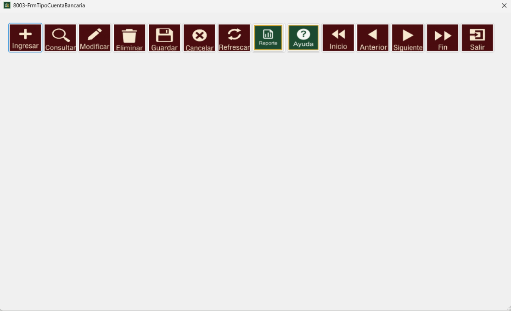
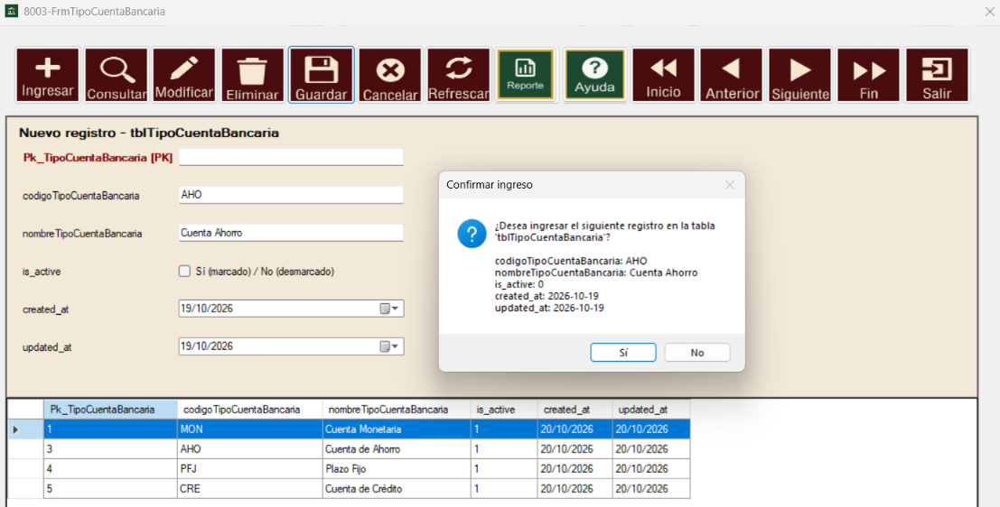
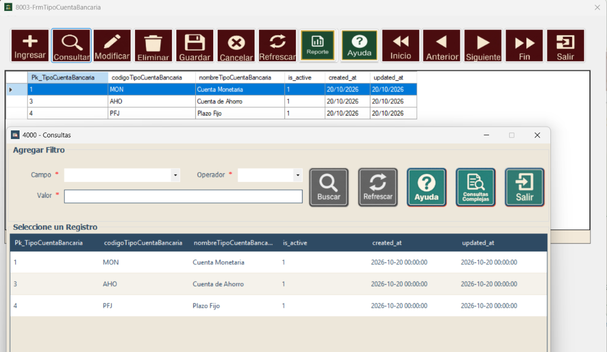
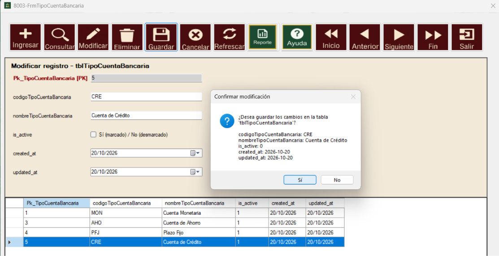
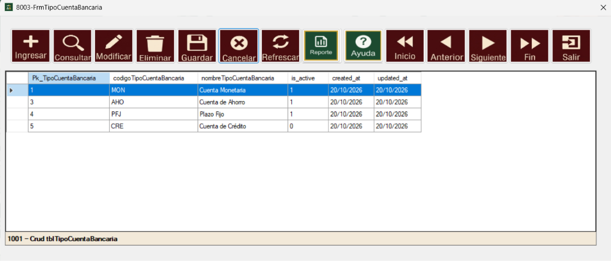
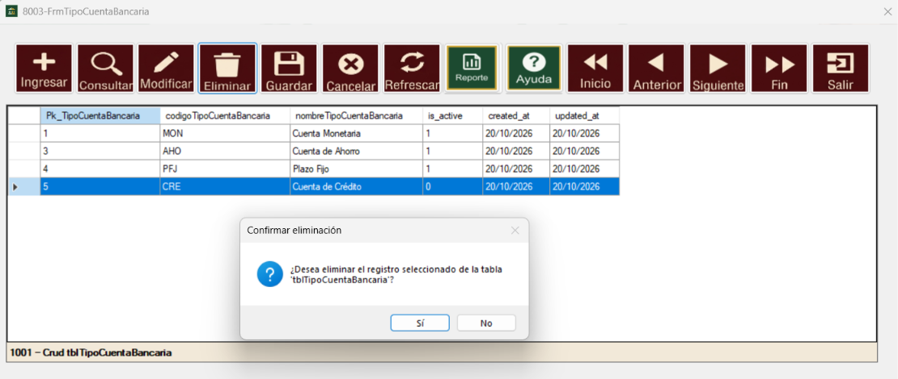
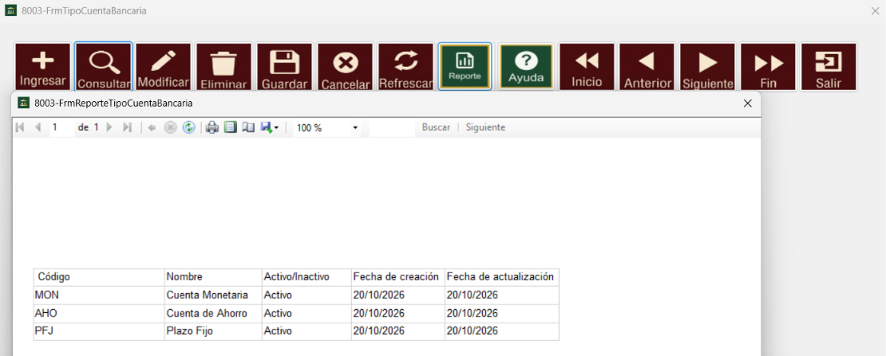
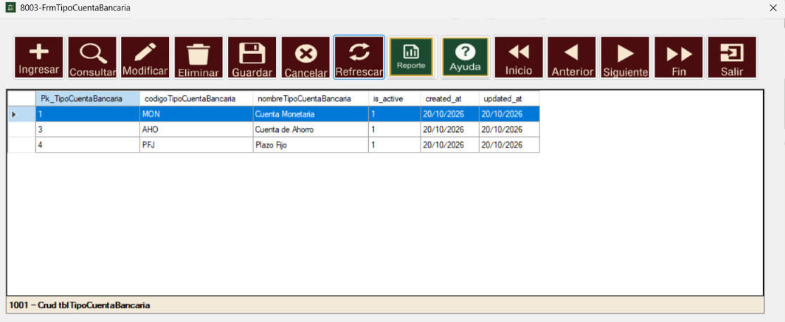
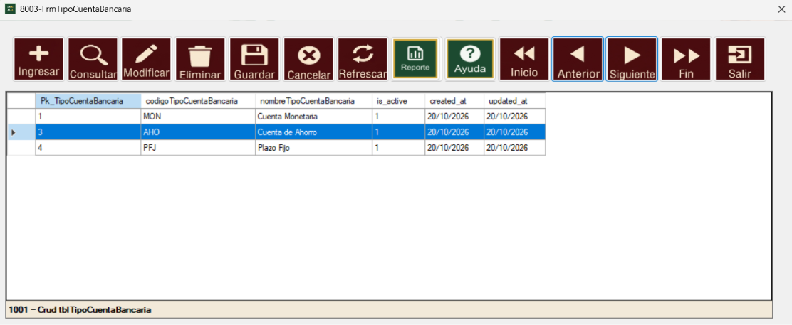
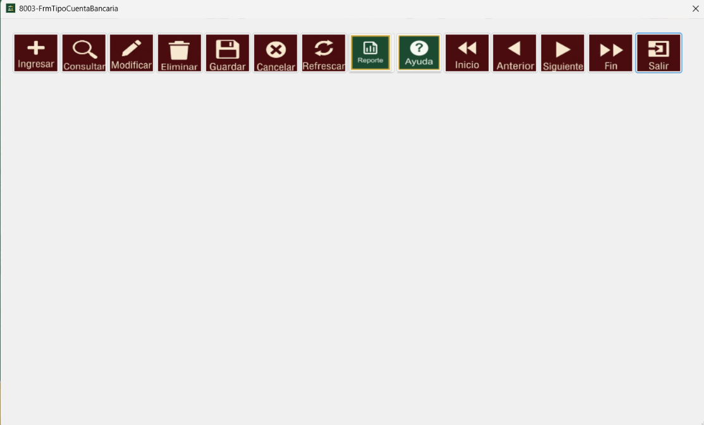

La ventana de Mantenimiento de Tipo de Cuenta Bancaria es parte del módulo Bancos (Tesorería y Bancos)
del sistema, desarrollado para Embutidos de Calidad S.A. Su función principal es administrar el
catálogo de tipos de cuenta bancaria (por ejemplo: Cuenta Monetaria, Cuenta de Ahorro o Plazo Fijo),
permitiendo registrar, consultar, modificar y eliminar los tipos según las necesidades de la organización.
Cada tipo de cuenta bancaria cuenta con un código único, un nombre y un estado que indica si se
encuentra activo o inactivo. Mantener este catálogo actualizado es importante, ya que estos tipos
sirven para clasificar las cuentas bancarias que maneja la empresa.
Esta ventana es la interfaz principal para la administración de los tipos de cuenta bancaria.
En la parte superior se encuentra la barra de botones del Navegador (Ingresar, Consultar, Modificar,
Eliminar, Guardar, Cancelar, Refrescar, Reporte, Ayuda, Inicio, Anterior, Siguiente, Fin y Salir) y en
la parte inferior se muestra la tabla con los registros existentes.
Los botones Ingresar, Modificar y Eliminar se habilitan según los permisos que tenga el
usuario asignados para esta aplicación. Si alguno aparece deshabilitado, el usuario no cuenta con ese
permiso.

El botón Ingresar permite registrar un nuevo tipo de cuenta bancaria: al presionarlo aparece un formulario con los campos que se deben llenar. Una vez completados los datos, el botón Guardar almacena el registro y este puede observarse en la tabla de la ventana.

El botón Consultar permite buscar un tipo de cuenta bancaria específico. Al presionarlo se abre la ventana de Consultas, donde se puede definir un filtro indicando el campo, el operador y el valor a buscar, y presionar el botón Buscar. De la lista de resultados se selecciona el registro deseado y la tabla de la ventana muestra únicamente ese registro. Para volver a ver todos los datos se utiliza el botón Refrescar.

El botón Modificar permite actualizar los datos de un tipo de cuenta bancaria ya registrado. Para utilizarlo, se selecciona en la tabla la fila que se desea modificar y se presiona el botón Modificar; el formulario se rellena automáticamente con los datos de ese registro. Una vez realizados los cambios, el botón Guardar almacena la modificación y esta puede observarse en la tabla de la ventana.

El botón Cancelar permite descartar una operación de ingreso o modificación que está en curso. Al presionarlo, el formulario se cierra sin guardar ningún cambio y en la ventana queda a la vista únicamente la tabla con los datos registrados.

El botón Eliminar permite remover un tipo de cuenta bancaria de la tabla. Para utilizarlo, se selecciona la fila con el dato que se desea eliminar y se presiona el botón Eliminar.

El botón Reporte abre una ventana con el listado completo de tipos de cuenta bancaria registrados (código, nombre, estado, fecha de creación y fecha de actualización).

Al presionar el botón Refrescar, el formulario se cierra si estaba abierto y se recarga la tabla con todos los datos registrados en el sistema, incluyendo los cambios más recientes. También se utiliza para volver a ver todos los registros después de una consulta.

La ventana proporciona 4 botones que permiten desplazarse entre los registros de la tabla: Inicio lleva al primer registro, Anterior retrocede al registro anterior, Siguiente avanza al registro posterior y Fin va al último registro.

El botón Salir cierra el formulario y la tabla donde se muestran los datos, dejando la ventana tal como se encuentra al iniciar, únicamente con la barra de botones. Para cerrar la ventana por completo se debe dar clic en la X de la parte superior derecha.
